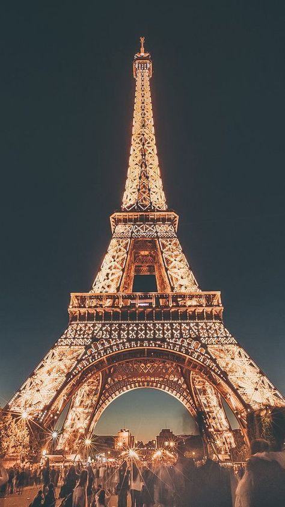

Paris is one of my dream places to travel into. Because its one of the romantic cities in the world. Im also a type of guy who likes art and I like to visit the places that just gives me a feeling that is unexplainable. But my main purpose in visit would be the eiffel tower and the food especially in midnight. Because the cityscape is dotted with parks and gardens, such as the Luxembourg Gardens and Tuileries Garden.